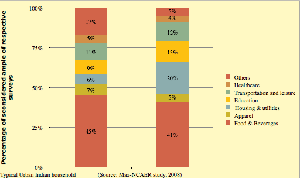
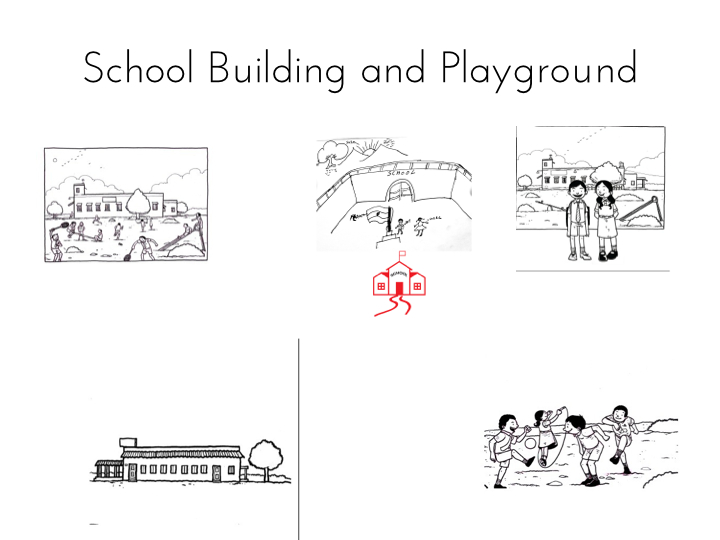
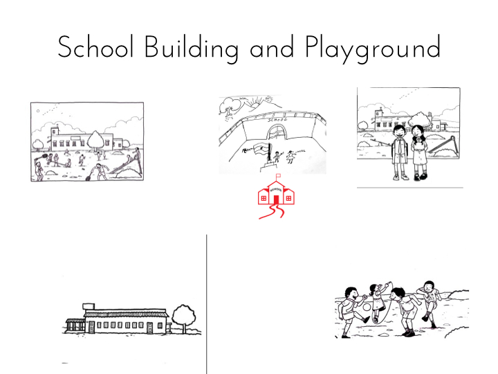

Overview
Design brief
Design an information product for low-income communities to share school ratings of low-cost private schools (approx. fees of $4-20 per month)
The challenges
- Explaining school quality to parents who might not have ever been inside a school
- No prior research was available to understand behaviors of parents who send their kids to low-cost private schools
- Many parents were unable to read; major challenge presenting text based information
- Lack of consistent and comparable data to build the rating across schools
- Lack of buy-in from schools in presenting ratings to parents; fear that low rating would drive down business
The insights
- Presenting school quality in the form of a report card for the school
- Parents make choices about schools based on proxies of quality
- Information about school passes from student to parent, rather than from school to parent?
- Parents threw away all pamphlets and brochures, but always kept calendars for their colors and pictures (even after the date period was over). This was an important insight that informed how we formatted the report card.
- Parents who send their children to low-cost private schools have started seeing themselves as consumers rather than beneficiaries
Our solutions
- Create the quality rating in the framework of a ‘school report card’
- Create the school report card in the format of a calendar
- Use symbols and pictures instead of text to convey information
- Build a back-end model and algorithm that would make different data comparable, and compute a simple score
Team
I worked with Sandhya, Aditi, Naveen, Sharad (User Experience Designer), Mickey (freelance graphic designer), and Sucharita (consulting anthropologist). My key contributions were in Research, Ideation, Prototyping and Delivery. This project was done for Gray Matters.
Discovery
Understanding parents as consumers of private schooling
Qualitative research & Focus groups

Backing it up with numbers
Quantitative survey

Ideation
Who are we building this for?
PERSONAS
Let's play some pictionary
participatory research

Prototyping
Creating symbols
User testing


 

Taking it out on the road
User testing
Delivery
Iteration is the name of the game
Iterative design